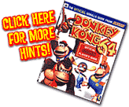
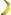
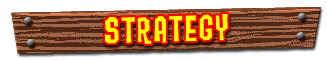
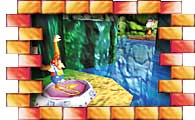
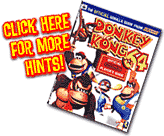

|  | First, open the Main Areas |
| Win the Rareware Coin from Cranky | |
| Light the Lighthouse | |
| Be a hero and free the Seal | |
| Race the Seal | |
| Explore the Sunken Ship | |
| Find and return Snide's Blueprint |
| 
|
|||||||||||||||
|   |
Those
Golden Bananas may not taste as good, but they sure are valuable! You
can help DK get a bunch of them on the Gloomy Galleon if you follow
these directions:
|
||||||||||||||